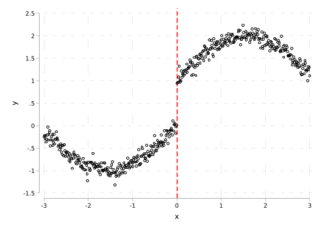
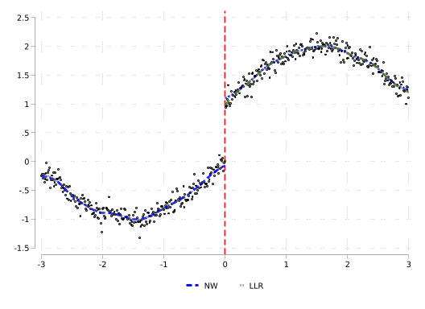
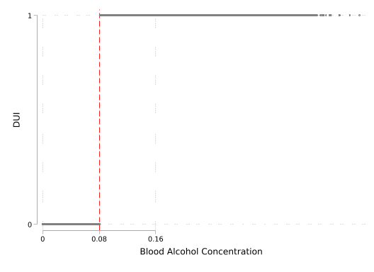
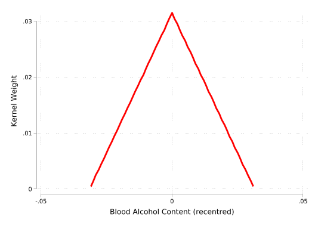
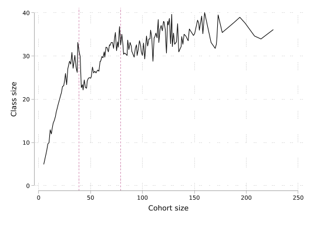
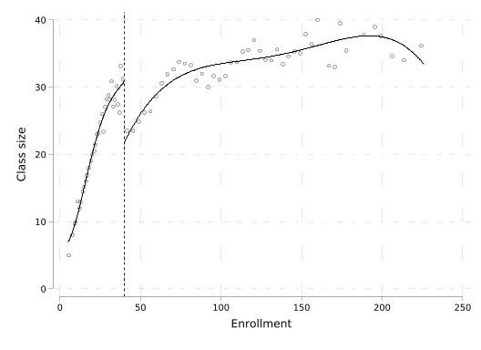
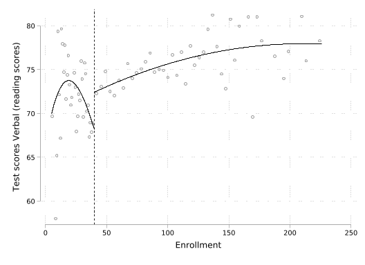
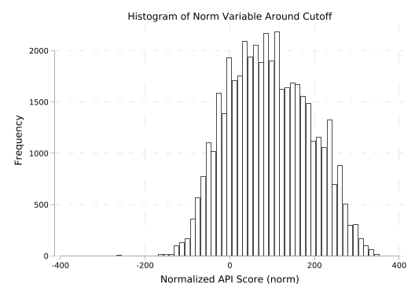
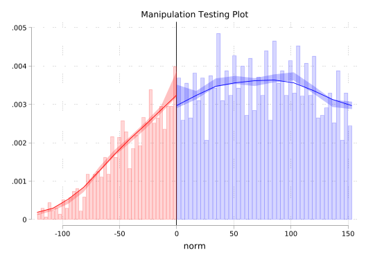
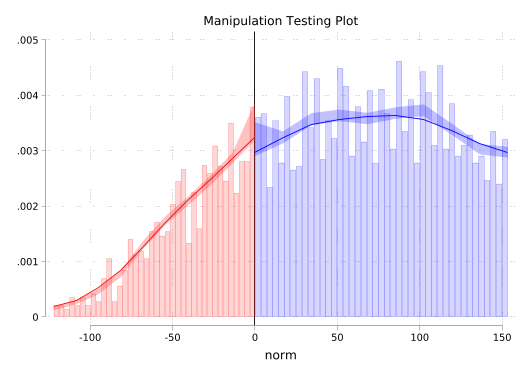

In this code call-out we will examine two common non-parametric estimation methods, and see why local linear regression, rather than the Nadaraya-Watson estimator, is preferred for regression discontinuity designs. We will consider a quite simple case, and examine how each of these techniques, along with a number of auxiliary modelling choices, manage to recover an underlying data generating process (DGP). To do this, we will work with the following simulated data: \[y_i = \sin{(x_i)} + \varepsilon_i \quad , \quad -3 \leq x \leq 3 \ , \ \varepsilon_i \sim \mathcal{N}(0,0.01)\] which will simply provide a sine function along with random noise. Below we will simulate 500 realisations of this, plotting the resulting data:
Generally, our goal in non-parametric estimation procedures will be to flexibly describe some data, or the relationship between two (or more) variables, and will do so by modelling variation local to some point of interest. These processes require at least two choices: a decision of which observations we consider “local” to each point, as well as a decision about how to weight variables around these points. The first of these choices is referred to as the bandwidth, whereas the second of these points is controlled by a kernel function, which can place more or less weight on variables at differing distances from the point of interest. For further information on these elements, refer to Section 6.3.2.3 of the book.
Bandwidth and Kernel Choices
Before we consider non-parametric models which seek to describe relationships between two variables (\(x_i\) and \(y_i\) above), we will explore the impact of choices of bandwidths and kernels when simply estimating the density of a single variable (\(y_i\)) itself. Prior to doing this, you may wish to note that above, even though we have generated an evenly spaced grid for \(x_i\), there will be more observations of \(y_i\) at certain points given the nature of the sine function (and you can confirm this by generating a histogram of the \(y_i\) data simulated here, or by simply exploring how \(\sin{x_i}\) maps into \(y_i\) at various different points of \(x_i\).)
Below, we will estimate the density of our \(y_i\) variable using a kernel density plot with the 4 different kernel functions plotted in Figure 6.6 of the book:
In general, we can see that while these kernel choices lead to reasonably similar descriptions of the data, the uniform kernel is the most noisy, which makes sense given that it places equal weight to observations which are close, and those which are further from each point of interest \(y\).
For these kernel density estimates presented above, the optimal bandwidth calculated automatically by Stata is used. This is Silverman’s rule of thumb bandwidth (Silverman (1986), p. 48) which is calculated as: \[h=0.9\times\min\bigg(\sigma,\frac{IQR}{1.34}\bigg)\times N^{-1/5}\] where \(\sigma\) refers to the standard deviation, and \(IQR\) the interquartile range of the data (you can confirm this easily enough by examining the values returned by kdensity above, and calculating the “optimal” quantity by hand). Varying these bandwidth values below (with a triangular kernel by default) we can see how densities are (over)-smooth with large bandwidths, while quite jumpy with small bandwidths:
Having briefly explored these auxiliary choices, let’s examine non-parametric estimation methods to describe relationships between two variables (in this case \(y\) and \(x\)). Here, we will examine the Nadaraya-Watson estimator (with a number of distinct kernels), and compare this to local linear regression. We can do both of these with Stata’s lpoly command, simply using degree(1) in cases where local linear regression is desired rather than Nadaraya-Watson.
We begin below by estimating using Nadaraya-Watson with a triangular and an Epanechnikov kernel, saving the output of these two estimation procedures. We will not inspect output yet (we will do so below), but you may wish to examine the resulting variables along with the original variables to see that we are returned a regression fit, and inspect the contents of return list which provides a number of pieces of information such as the bandwidth used by default. We will do a similar procedure for local linear regression using these two kernels (Epanechnikov is the default kernel in this case):
// NW Triangle (Nadaraya-Watson con kernel triangular)lpoly y x, kernel(triangle) gen(x_nw_t y_nw_t) nograph n(500)// NW Epanechnikovlpoly y x, kernel(epan) gen(x_nw_e y_nw_e) nograph n(500)// LLR Triangle (Regresión local lineal con kernel triangular)lpoly y x, kernel(triangle) degree(1) gen(x_llr_t y_llr_t) nograph n(500)// LLR Epanechnikovlpoly y x, kernel(epan) degree(1) gen(x_llr_e y_llr_e) nograph n(500)
We can now inspect the output of each of these procedures and plot the estimated fit on top of the original data. We do this in the code block below:
A key thing to note in the above is that while the Nadaraya-Watson and local linear regression provide quite similar fits away from the end points of the data, at the end points (ie where \(x\) is close to -3 and 3), they diverge substantially, with local linear regression appearing to do a much better job of approximating the true data.
While this pattern lines up with the discussion of local linear regression as providing a better fit at the end point of data, we have simply accepted default arguments from each of the above libraries. Below we consider cases where we can compare with a range of (similar) bandwidths, always using an identical triangular kernel:
In this case we see that with identical (arbitrary) bandwidths, the performance of Nadaraya-Watson and Local Linear regression is virtually identical away from the end points, degrading for Nadaraya-Watson at the end points of data.
Examining the implications for regression-discontinuity estimation
To see what this may imply for RD estimation, we will consider estimates of end points on either side of a discontinuity. We will do this by generating a jump in the previous function at the point where \(x = 0\), and then modelling regression fits on either side of this cut-off. Below we generate this jump in our data, and plot the result:
*! fig-cap: ""Simulated data with a discontinuity"clearset obs 500set seed 121316gen x = -3 + (_n - 1) * (6 / 499)gen eps = rnormal(0, 0.1)gen y = sin(x) + epsreplace y = y + 1 if x > 0twoway /// (scatter y x, msize(small) mcolor(black)) /// , /// xline(0, lcolor(red) lpattern(dash) lwidth(medthick)) /// xscale(range(-3 3)) /// xlabel(-3(1)3) /// yscale(range(-1.5 2.5)) /// ylabel(-1.5(.5)2.5) /// legend(off)
Number of observations (_N) was 0, now 500.
(250 real changes made)

Let’s now examine what our regression fits look like if we separately model on either side of the cut-off with Nadaraya-Watson and Local Linear regressions. Below we do this, using default bandwidths from each routine:
*! fig-cap: "Local non-parametric fits on either side of the cut-off"// NW leftlpoly y x if x<=0, kernel(triangle) gen(x_nw_l y_nw_l) nograph n(500)// NW rightlpoly y x if x > 0, kernel(triangle) gen(x_nw_r y_nw_r) nograph n(500)// LLR leftlpoly y x if x <= 0, kernel(triangle) degree(1) gen(x_ll_l y_ll_l) nograph n(500)// LLR rightlpoly y x if x > 0, kernel(triangle) degree(1) gen(x_ll_r y_ll_r) nograph n(500)twoway/// (scattery x, mcolor(black) msize(vsmall)) /// (line y_nw_l x_nw_l, lcolor(blue) lwidth(thick)) /// (line y_nw_r x_nw_r, lcolor(blue) lwidth(thick)) /// (line y_ll_l x_ll_l, lcolor(forest_green) lwidth(thick)) /// (line y_ll_r x_ll_r, lcolor(forest_green) lwidth(thick)) /// , xline(0, lcolor(red) lpattern(dash) lwidth(medthick)) ///xlabel(-3(1)3) ///ylabel(-1.5(.5)2.5) ///xscale(range(-3 3)) ///yscale(range(-1.5 2.5)) ///legend(order(2 "NW" 4 "LLR") position(6) cols(2))

As expected (and as we saw previously when examining end-points of data), if we zoom in at points close to cutoff we observe that Local Linear regression seems to outperform Nadaraya-Watson regression.
To examine this more formally, we will repeat the above exercise 1000 times (using a similar bandwidth for each procedure), and examine the 95% confidence intervals from our regression estimates, and how these compare to the actual DGP. We will begin by cleaning up a number of previously generated regression fits:
drop y_* x_*
Now, let’s conduct our 1000 simulations. The key thing to note in the below “experiment” is that in each iteration we are re-simulating data \(y\) and then storing the resulting regression fit (for both Nadaraya-Watson and Local linear regession) as a variable named y_nw_l_NUM, or y_ll_l_NUM for Nadaraya-Watson and Local linear fits respectively, simply replacing NUM by simulation numbers. The other thing to note is that really what we care about in these simulations is the fitted y-value rather than the fitted x-value (which will simply be evenly spaced and identical in each case), and so we drop the variable x_t following each fit, with the exception of the final version in the final loop.
local Nsim = 1000local pars kernel(epan) bwidth(0.25)forvalues i = 1/`Nsim' {drop eps ygen eps = rnormal(0, 0.1)geny = sin(x) + (x > 0) + eps//NW-left lpoly y x if x <= 0, `pars'gen(x_t y_nw_l_`i') nograph n(500)drop x_t//NW-right lpoly y x if x > 0 , `pars'gen(x_t y_nw_r_`i') nograph n(500)drop x_t//LLR-left lpoly y x if x <= 0, `pars' degree(1) gen(x_t y_ll_l_`i') nograph n(500)if`i'<`Nsim'drop x_telserename x_t x_fit_l//LLR-right lpoly y x if x > 0 , `pars' degree(1) gen(x_t y_ll_r_`i') nograph n(500)if`i'<`Nsim'drop x_telserename x_t x_fit_r}
The above simulations result in a large number (1000) variables for each of the 4 fits considered, and these provide the fitted value at each point of a grid of x. Below, we will generate 95% confidence intervals of these fitted values by taking the percentile 2.5 and 97.5 at each point of the support of x. We will do this with the convenient rowpctile function in egen:
Now finally, let’s have a look at each of the resulting end points, and compare it with the true underlying data generating process. We will do so by plotting the confidence intervals we generated above for both local linear and Nadaraya-Watson estimates.
While it appears that once again we can see the degradation of the behaviour of the fit with Nadaraya-Watson estimator at the end points of data, the confidence intervals here are quite narrow, and it is difficult to appreciate the divergence between these intervals and the underlying DGP plotted in grey. This is much clearer if we zoom in on the zone \(-0.5 \leq x \leq 0.5\), as below:
In this case we clearly see that while the local linear regression estimator contains the true DGP at all points, the Nadaraya-Watson estimator diverges close to the end points on each side, which is precisely the area we will be interested in when conducting regression discontinuity analyses. What’s more, if we use a larger bandwidth, we will see that this behaviour only becomes more problematic
Hansen (2015) is interested in determining whether the sanctions on a driving under the influence of alcohol (DUI) affect recidivism. The DUI is determined by the blood alcohol content (BAC). This paper uses administrative records on a 512,964 DUI stops in Washington state (WA). A BAC above 0.08 denotes a DUI and forms a sharp threshold. Hansen exploits this threshold in a sharp regression discontinuity design. This paper finds evidence that having a blood alcohol content about the DUI threshold reduces rates of recidivism over the next four years.
We can visualise the design below. First, if we inspect the running variable, we can see that individuals are observed to have measured BACs over a wide range of values, with, as expected, no noteworthy bunching at the threshold arrest value of 0.08:
Second, we can see that the regression discontinuity is indeed sharp, with a jump in arrests for DUI from 0 at values of BAC at less then 0.08, to 1 for individuals with a BAC of 0.08 or higher.
// Plot the relationship between BAC1 and DUItwowayscatter dui bac1, msize(vsmall) mlcolor(gs8) ///xline(0.08, lpattern(dash) lcolor(red)) ///xlabel(0 "0" 0.08 "0.08" 0.16 "0.16") ///ylabel(0 "0" 1 "1") ytitle("DUI") ///xtitle("Blood Alcohol Concentration") ///legend(off)

In this code call-out, we will explore the implementation of a Regression Discontinuity Design (RDD) which seeks to estimate the effect of these DUI arrests on recidivism, using BAC levels as the running variable. We will see how to implement the optimal procedure of Calonico, Cattaneo, and Titiunik (2014), and also that we can perfectly replicate the point estimates returned by these procedures by estimating simple regression models in the optimal bandwidth indicate.
We start below by loading our data once again, and re-standardising the running variable such that the cut-point is centreed precisely at 0. We could proceed without doing this, however this simplifies our models as well as the syntax of a number of commands. Then, provided that rdrobust is installed, we can estimate the optimal RDD estimate with a linear specification for the running variable and using a uniform kernel as below.
// Adjust the variable `bac1` by subtracting 0.08 to center it around the DUI thresholdreplace bac1 = bac1 - 0.08// Run the regression discontinuity design (RDD) using the rdrobust command// Using a uniform kernel to get sharp RD estimates at the threshold (0)rdrobust recidivism bac1, kernel(uniform)// Store the coefficient from rdrobust in a local for easy referencelocal coef_rdrobust_value = _b[RD_Estimate]
(214,558 real changes made)
Mass points detected in the running variable.
Sharp RD estimates using local polynomial regression.
Cutoff c = 0 | Left of c Right of c Number of obs = 214558
-------------------+---------------------- BW type = mserd
Number of obs | 23010 191548 Kernel = Uniform
Eff. Number of obs | 13794 24555 VCE method = NN
Order est. (p) | 1 1
Order bias (q) | 2 2
BW est. (h) | 0.020 0.020
BW bias (b) | 0.035 0.035
rho (h/b) | 0.580 0.580
Unique obs | 81 318
Outcome: recidivism. Running variable: bac1.
-------------------------------------------------------------------------------
Method | Coef. Std. Err. z P>|z| [95% Conf. Interval]
-------------------+-----------------------------------------------------------
Conventional | -.017 .00629 -2.7017 0.007 -.029325 -.004666
Robust | - - -2.2894 0.022 -.031834 -.002468
-------------------------------------------------------------------------------
Estimates adjusted for mass points in the running variable.
In practice, the linear specification for the runnign variable simply implies the following model. Here, \(DUI_i\) takes values of 1 if an individual is arrested for a DUI (ie if \(BAC\geq 0.08\)), or 0 otherwise. We then allow for separate linear trends for the running variable on either side as \(\beta_1\) will capture the trend on the left-hand side, while \(\beta_1+\beta_2\) will capture the trend on the right-hand side. Thus, our model below allows for separate linear trends, while also allowing for a discontinuity at the cut-point, captured by the parameter on the binary variable \(DUI_i\). \[
recidivism_i = \beta_0 + \beta_1 BAC_i + \beta_2 BAC_i \times DUI_i + \tau^{RDD} DUI_i + \varepsilon_i
\]
Before estimating the regression discontinuity estimate itself, we can confirm to ourselves that this model does effectively allow for a separate linear trend on each side of the cut-off, and separate intercept terms on either side of the cut-off. Below, we will set-up the required variables, and then calculate the predicted trend for the below cut-off portion of our model (y_below), as well as the above cut-off portion of our model:
// Generate a separate control for running variable * abovegen bacXabove = bac1*dui// Run a manual OLS regression of recidivism on DUI status, centered BAC, and the interaction term within the RD bandwidth// This filters observations within the left and right bandwidths calculated by rdrobust (`e(h_l)` and `e(h_r)`)reg recidivism dui bac1 bacXabovegen y_below = _b[_cons] + _b[bac1]*bac1 if bac1<0gen y_above = (_b[_cons] + _b[dui]) + /// (_b[bac1] + _b[bacXabove])*bac1 if bac1>0sort bac1twowayline y_below bac1 if bac1<0, lcolor(black) lpattern(solid) ///|| line y_above bac1 if bac1>0 & bac1<0.1, lcolor(black) /// lpattern(solid) xline(0, lcolor(red) lwidth(thick)) /// legend(off) ytitle("Predicted Recidivism") ylabel(, format(%05.3f)) /// xtitle("Normalised Blood Alcohol Content") xlabel(, format(%05.3f))
As we can see, we observe a quite clear jump at the cut-off when this specific functional form is imposed, and this jump appears to be in line with the quantity estimate above by the rdrobust command. But to see that this is indeed what rdrobust does, we can implement this model “by hand” with the exact same optimal bandwidth used in rdrobust. In this case, we will also estimate exactly the same regression discontinuity estimate as above (though not the same standard errors, given that rdrobust implements bias-correction methods discussed in Section 6.3.3 of the book).
* Run a manual OLS regression of recidivism on DUI status, centered BAC, and the interaction term within the RD bandwidth* This filters observations within the left and right bandwidths calculated by rdrobust (`e(h_l)` and `e(h_r)`)rdrobust recidivism bac1, kernel(uniform)reg recidivism dui bac1 c.bac1#dui if bac1 > -e(h_l) & bac1 < e(h_r)* Store the coefficient of the `dui` variable from the manual regression in a localmacrolocal coef_manual = _b[dui]* Display the results for comparison* Show the rdrobust coefficient (calculated with controls) and the manually calculated coefficient for `dui`dis "rdrobust coefficient with controls: `coef_rdrobust_value'"dis "Manual coefficient with controls: `coef_manual'"
Mass points detected in the running variable.
Sharp RD estimates using local polynomial regression.
Cutoff c = 0 | Left of c Right of c Number of obs = 214558
-------------------+---------------------- BW type = mserd
Number of obs | 23010 191548 Kernel = Uniform
Eff. Number of obs | 13794 24555 VCE method = NN
Order est. (p) | 1 1
Order bias (q) | 2 2
BW est. (h) | 0.020 0.020
BW bias (b) | 0.035 0.035
rho (h/b) | 0.580 0.580
Unique obs | 81 318
Outcome: recidivism. Running variable: bac1.
-------------------------------------------------------------------------------
Method | Coef. Std. Err. z P>|z| [95% Conf. Interval]
-------------------+-----------------------------------------------------------
Conventional | -.017 .00629 -2.7017 0.007 -.029325 -.004666
Robust | - - -2.2894 0.022 -.031834 -.002468
-------------------------------------------------------------------------------
Estimates adjusted for mass points in the running variable.
Source | SS df MS Number of obs = 38,349
-------------+---------------------------------- F(3, 38345) = 11.51
Model | 3.24344251 3 1.0811475 Prob > F = 0.0000
Residual | 3600.88428 38,345 .093907531 R-squared = 0.0009
-------------+---------------------------------- Adj R-squared = 0.0008
Total | 3604.12772 38,348 .093984764 Root MSE = .30644
------------------------------------------------------------------------------
recidivism | Coefficient Std. err. t P>|t| [95% conf. interval]
-------------+----------------------------------------------------------------
dui | -.0169953 .0062345 -2.73 0.006 -.0292152 -.0047755
bac1 | -.4265196 .4464922 -0.96 0.339 -1.301656 .4486166
|
dui#c.bac1 |
1 | .5801713 .5624884 1.03 0.302 -.5223205 1.682663
|
_cons | .1135217 .0045478 24.96 0.000 .1046079 .1224354
------------------------------------------------------------------------------
rdrobust coefficient with controls:
Manual coefficient with controls: -.016995323779987
It is illustrative to also see that we can replicate point estimates (though not confidence intervals) with other polynomial orderings, and with other kernel density estimates. Above we had used a uniform density, because this implied simply assigning the same weight to each observation. However, it is somewhat more standard (and indeed, rdrobusts default behaviour), to use a triangular kernel which gives the most weight to units closest to the cut-off, linearly declining to 0 at the end of the optimal bandwidth. To see that we can also replicate results manually in other settings, let’s start by consider the case where we wish to work with the default behaviour in rdrobust and use a triangular density. We will begin by simply estimating rdrobust and saving the coefficient of interest:
* Re-run rdrobust, however now with (default) triangular kernel densityrdrobust recidivism bac1locallower = 0-e(h_l)localupper = 0+e(h_r)local coef_rdrobust_triangle = _b[RD_Estimate]dis "Our estimation bandwidth is from `lower' to `upper'"dis "Our RD Robust coefficient is `coef_rdrobust_triangle'"
Mass points detected in the running variable.
Sharp RD estimates using local polynomial regression.
Cutoff c = 0 | Left of c Right of c Number of obs = 214558
-------------------+---------------------- BW type = mserd
Number of obs | 23010 191548 Kernel = Triangular
Eff. Number of obs | 16574 41013 VCE method = NN
Order est. (p) | 1 1
Order bias (q) | 2 2
BW est. (h) | 0.031 0.031
BW bias (b) | 0.050 0.050
rho (h/b) | 0.633 0.633
Unique obs | 81 318
Outcome: recidivism. Running variable: bac1.
-------------------------------------------------------------------------------
Method | Coef. Std. Err. z P>|z| [95% Conf. Interval]
-------------------+-----------------------------------------------------------
Conventional | -.01826 .00567 -3.2203 0.001 -.029376 -.007147
Robust | - - -2.5025 0.012 -.029963 -.003643
-------------------------------------------------------------------------------
Estimates adjusted for mass points in the running variable.
Our estimation bandwidth is from -.0314515526822107 to .0314515526822107
Our RD Robust coefficient is -.0182612604662354
To generate a triangular kernel, we wish to generate a weight which is centred on the cut-point, and which declines linearly to the end points of this estimation bandwidth. Noting that our optimal bandwidth is the same on both sides, and that our running variable has been re-centred at zero, we can define our triangular kernel weights \(K\) as follows: \[
K(running\ variable) = (h_{opt}-|running\ variable|),
\] for all values between \(-h_{opt}\) and \(h_{opt}\). This ensures that our weights will reach their maximum point when centred on 0 (the cut-off), and decline to 0 at the end of the optimal bandwidth range. We do this below, checking to see what our weight variable looks like to ensure that we have set this up correctly.
* Generate weightsgen K = e(h_l)-abs(bac1)replace K = . if K<0sort bac1twowayline K bac1 if bac1>=-0.05 & bac1<=0.05, ///xtitle("Blood Alcohol Content (recentred)") ///ytitle("Kernel Weight") lwidth(thick) lcolor(red)
(156,971 real changes made, 156,971 to missing)

With this triangular weight in hand, we can once again “manually” replicate the rdrobst point estimate (though not the standard errors). This is simply done using our linear fit for the running variable on each side of the cut-off, and weighting using the kernel:
//Estimate the "manual" RD, weighting by the kernelreg recidivism dui bac1 c.bac1#dui [pw=K]local coef_manual_triangle = _b[dui]dis "rdrobust triangular kernel: "%08.7f `coef_rdrobust_triangle'dis "manual triangular kernel : "%08.7f `coef_manual_triangle'
As we see above, our estimates are identical, up to a large number of decimal places. Finally, in the interests of completion, let’s just confirm to ourselves that we can also replicate what rdrobust does with a quadratic fit of the running variable. In this case, we need to simply augment the specification which we estimated previously which generated a separate linear fit on each side of the cut-off of interest with an additional quadratic term on each side. While there are various ways we can do this, one of these is documented below:
// generate quadratic fitgen bac_sq = bac1*bac1// generate quadratic fit for right-hand side gen bac_sqXabove = bac_sq*dui
Now, with linear and quadratic forms of the running variable, as well as indicators allowing for separate trends on either side of the cut-off, we can confirm that rdrobust with a quadratic running variable is the same (in terms of point estimate) as a regression of the outcome on dui plus the separate quadratic fit on each side:
// Run rdrobust with quadratic fit (and uniform kernel for simplicity)rdrobust recidivism bac1, p(2) kernel(uniform)// Manually replicate this estimatereg recidivism dui bac1 bacXabove bac_sq bac_sqXabove if bac1 > -e(h_l) & bac1 < e(h_r)
Mass points detected in the running variable.
Sharp RD estimates using local polynomial regression.
Cutoff c = 0 | Left of c Right of c Number of obs = 214558
-------------------+---------------------- BW type = mserd
Number of obs | 23010 191548 Kernel = Uniform
Eff. Number of obs | 16195 37939 VCE method = NN
Order est. (p) | 2 2
Order bias (q) | 3 3
BW est. (h) | 0.030 0.030
BW bias (b) | 0.044 0.044
rho (h/b) | 0.672 0.672
Unique obs | 81 318
Outcome: recidivism. Running variable: bac1.
-------------------------------------------------------------------------------
Method | Coef. Std. Err. z P>|z| [95% Conf. Interval]
-------------------+-----------------------------------------------------------
Conventional | -.01616 .00788 -2.0517 0.040 -.031607 -.000723
Robust | - - -1.8468 0.065 -.033717 .001002
-------------------------------------------------------------------------------
Estimates adjusted for mass points in the running variable.
Source | SS df MS Number of obs = 54,134
-------------+---------------------------------- F(5, 54128) = 7.62
Model | 3.58012198 5 .716024396 Prob > F = 0.0000
Residual | 5087.55678 54,128 .09399122 R-squared = 0.0007
-------------+---------------------------------- Adj R-squared = 0.0006
Total | 5091.1369 54,133 .094048675 Root MSE = .30658
------------------------------------------------------------------------------
recidivism | Coefficient Std. err. t P>|t| [95% conf. interval]
-------------+----------------------------------------------------------------
dui | -.016165 .0078153 -2.07 0.039 -.031483 -.0008469
bac1 | -.5056066 1.038639 -0.49 0.626 -2.541348 1.530135
bacXabove | .4000078 1.316058 0.30 0.761 -2.179477 2.979492
bac_sq | -11.68842 38.49112 -0.30 0.761 -87.13132 63.75449
bac_sqXabove | 24.62311 46.16904 0.53 0.594 -65.86856 115.1148
_cons | .1136683 .0055417 20.51 0.000 .1028064 .1245301
------------------------------------------------------------------------------
We can see here that the coefficient on dui in the latter model is identical to the coefficient estimate in rdrobust with the quadratic polynomial (p(2)).
Code Call-out 6.3: Fuzzy RDD, First Stages, and Reduced Forms
In this code call-out we will explore a Fuzzy regression discontinuity design, documenting the first stage, reduced form estimate, and the resulting regression discontinuity estimate. We will work with data from Angrist and Lavy (1999) which examines class sizes and educational outcomes. To isolate hte effect of class size, they take advantage of the fact that in the setting under study, class sizes are generally capped at 40 students. For this reason, classes in schools with 40 students enrolled would be expected to be set at 40 students, while schools with 41 students will split into two classes, with around 20-21 students on average. Given that this is not a sharp jump from 0 to 1 at the cut-off, this can be implemented as a Fuzzy RDD.
For this code call-out we will use two user-written ados which can be installed from the SSC: rdrobust and rdplot. We will begin by loading data:
// Clean the environmentclearallsetmoreoff// Load datause"data/Angrist_Lavy_1999.dta", clear
If we inspect these data, we will see that there are a number of key variables which we will use here. These include avgverb (the average reading score of students in these data) which is our outcome variable. It also includes c_size, the cohort size from an individual’s school which is our running variable, and our treatment of interest classize, which is the size of an individual’s class.
Before formally getting into the details of this fuzzy RD, let’s have a look at key elements of the design. Below we will examine the average class size for each given cohort size. While we see that there is some noise, we clearly observe the sharp fall in class size occurring when cohorts reach 40 and 80 students.
(Note: Below code run with echo to enable preserve/restore functionality.)

Estimating the “First Stage”
Let’s begin by estimating the first stage of the discontinuity which quantifies the decline in class size in the area immediately surrounding the cut-off. We will do this with the default settings of rdrobust, where we consider the treatment variable (class size) as the outcome, with the running variable (cohort size), and a cut-off at 40 students. In practice in a setting like this we would likely wish to consider the multiple cut-offs available in our data (see Section 6.5.2 of the book), however for the interests of this code call-out, we will only consider the first cut-off.
//Implement rdrobust with default settings (cut-off=40)rdrobust classize c_size, c(40) //Extract coefficient for the first steplocal coef_first_stage = e(tau_cl)//Extract the optimal bandwidthlocal bandwidth_fs = e(h_l)display`bandwidth_fs'
Mass points detected in the running variable.
Sharp RD estimates using local polynomial regression.
Cutoff c = 40 | Left of c Right of c Number of obs = 2029
-------------------+---------------------- BW type = mserd
Number of obs | 288 1741 Kernel = Triangular
Eff. Number of obs | 96 236 VCE method = NN
Order est. (p) | 1 1
Order bias (q) | 2 2
BW est. (h) | 10.288 10.288
BW bias (b) | 16.048 16.048
rho (h/b) | 0.641 0.641
Unique obs | 33 121
Outcome: classize. Running variable: c_size.
-------------------------------------------------------------------------------
Method | Coef. Std. Err. z P>|z| [95% Conf. Interval]
-------------------+-----------------------------------------------------------
Conventional | -7.2853 2.5711 -2.8336 0.005 -12.3245 -2.24614
Robust | - - -2.1312 0.033 -13.1154 -.549027
-------------------------------------------------------------------------------
Estimates adjusted for mass points in the running variable.
10.287519
Here we can see that our estimated first stage effect is a decline of 7.3 students when crossing the threshold, and a bandwidth of around 10 is used. We save these quantities for later reference. If we wish to visualise this automatically, we can use packages such as rdplot, which we call below:
//Visualise the discontinuity in class size at 40 studentsrdplot classize c_size, c(40) /// graph_options(title("") xtitle("Enrollment") ytitle("Class size") ///legend(off) scheme(plotplainblind))
Mass points detected in the running variable.
RD Plot with evenly spaced mimicking variance number of bins using polynomial r
> egression.
Cutoff c = 40 | Left of c Right of c Number of obs = 2029
----------------------+---------------------- Kernel = Uniform
Number of obs | 288 1741
Eff. Number of obs | 288 1741
Order poly. fit (p) | 4 4
BW poly. fit (h) | 35.000 186.000
Number of bins scale | 1.000 1.000
Outcome: classize. Running variable: c_size.
---------------------------------------------
| Left of c Right of c
----------------------+----------------------
Bins selected | 55 52
Average bin length | 0.636 3.577
Median bin length | 0.636 3.577
----------------------+----------------------
IMSE-optimal bins | 10 28
Mimicking Var. bins | 55 52
----------------------+----------------------
Rel. to IMSE-optimal: |
Implied scale | 5.500 1.857
WIMSE var. weight | 0.006 0.135
WIMSE bias weight | 0.994 0.865
---------------------------------------------
/bin/bash: line 1: version: command not found

Estimating the Reduced Form
Let’s now consider the reduced form effect of crossing the threshold on average reading test scores. Below we re-run rdrobust with this outcome, however this time we use the previously defined bandwidth to permit for the comparison with the automatic implementation of the fuzzy RD below. Once again we save the estimated coefficient in a local for use below.
//Implement rdrobust with default settings (cut-off=40)rdrobust avgverb c_size, c(40) h(`bandwidth_fs')//Extract coefficient and from the reduced form modellocal coef_reduced_form = e(tau_cl)
Sharp RD estimates using local polynomial regression.
Cutoff c = 40 | Left of c Right of c Number of obs = 2024
-------------------+---------------------- BW type = Manual
Number of obs | 287 1737 Kernel = Triangular
Eff. Number of obs | 96 236 VCE method = NN
Order est. (p) | 1 1
Order bias (q) | 2 2
BW est. (h) | 10.288 10.288
BW bias (b) | 10.288 10.288
rho (h/b) | 1.000 1.000
Outcome: avgverb. Running variable: c_size.
-------------------------------------------------------------------------------
Method | Coef. Std. Err. z P>|z| [95% Conf. Interval]
-------------------+-----------------------------------------------------------
Conventional | 4.3157 3.2615 1.3232 0.186 -2.07674 10.7082
Robust | - - 0.2853 0.775 -8.79457 11.7913
-------------------------------------------------------------------------------
Here we see that test scores increase by around 4 points when crossing this threshold (or about 50% of a standard deviation). Similar to the first stage, if we wish to view a graphical output of this reduced form relationship we can easily do so using rdplot:
Mass points detected in the running variable.
RD Plot with evenly spaced mimicking variance number of bins using polynomial r
> egression.
Cutoff c = 40 | Left of c Right of c Number of obs = 2024
----------------------+---------------------- Kernel = Uniform
Number of obs | 287 1737
Eff. Number of obs | 287 1737
Order poly. fit (p) | 3 3
BW poly. fit (h) | 35.000 186.000
Number of bins scale | 1.000 1.000
Outcome: avgverb. Running variable: c_size.
---------------------------------------------
| Left of c Right of c
----------------------+----------------------
Bins selected | 37 51
Average bin length | 0.946 3.647
Median bin length | 0.946 3.647
----------------------+----------------------
IMSE-optimal bins | 7 9
Mimicking Var. bins | 37 51
----------------------+----------------------
Rel. to IMSE-optimal: |
Implied scale | 5.286 5.667
WIMSE var. weight | 0.007 0.005
WIMSE bias weight | 0.993 0.995
---------------------------------------------

Putting things together
Let’s now bring this together, and confirm that our Fuzzy RD estimate in this setting is equivalent to the ratio of the reduced form and the first stage (ie the IV estimate). We will do this below by first implementing rdrobust with the previously saved bandwidth. We will indicate that this is a Fuzzy design by using the fuzzy option, along with the treatment variable of interest. Then we will manually calculate the ratio of previously generated estimates.
//Run Fuzzy RDrdrobust avgverb c_size, c(40) fuzzy(classize) h(`bandwidth_fs')//Now compare with ratio of previously generated point estimateslocal manual_RDF = `coef_reduced_form' / `coef_first_stage'displayastext"Fuzzy RD (Manual) Estimate: "as result %9.3f `manual_RDF'
Fuzzy RD estimates using local polynomial regression.
Cutoff c = 40 | Left of c Right of c Number of obs = 2024
-------------------+---------------------- BW type = Manual
Number of obs | 287 1737 Kernel = Triangular
Eff. Number of obs | 96 236 VCE method = NN
Order est. (p) | 1 1
Order bias (q) | 2 2
BW est. (h) | 10.288 10.288
BW bias (b) | 10.288 10.288
rho (h/b) | 1.000 1.000
First-stage estimates. Outcome: classize. Running variable: c_size.
-------------------------------------------------------------------------------
Method | Coef. Std. Err. z P>|z| [95% Conf. Interval]
-------------------+-----------------------------------------------------------
Conventional | -7.2853 2.5711 -2.8336 0.005 -12.3245 -2.24614
Robust | - - -1.6982 0.089 -16.2294 1.16134
-------------------------------------------------------------------------------
Treatment effect estimates. Outcome: avgverb. Running variable: c_size. Treatme
> nt Status: classize.
-------------------------------------------------------------------------------
Method | Coef. Std. Err. z P>|z| [95% Conf. Interval]
-------------------+-----------------------------------------------------------
Conventional | -.59239 .57152 -1.0365 0.300 -1.71256 .527778
Robust | - - -0.1943 0.846 -2.0561 1.6852
-------------------------------------------------------------------------------
Fuzzy RD (Manual) Estimate: -0.592
We can see above that as discussed, these two methods are identical.
Working with the Optimal Bandwidth
Note that in practice, Fuzzy RDDs work with an optimal bandwidth calculated for this design, and so rather than working with the first-stage bandwidth as above, if we wish to replicate the default Fuzzy RDD point estimate from rdrobust we can simply use this bandwidth in our reduced form and first stage models. Below we illustrate this, observing that our point estimates are identical in both cases:
//Estimate Fuzzy RD for optimal bandwidthrdrobust avgverb c_size, c(40) fuzzy(classize) local fuzzy_bandwidth = e(h_l)//Estimate reduced form with this bandwidthrdrobust avgverb c_size, c(40) h(`fuzzy_bandwidth') local RF = e(tau_cl)//Estimate first stage with this bandwidthrdrobust classize c_size, c(40) h(`fuzzy_bandwidth') local FS = e(tau_cl)//Compare with automatic implementationdis "Fuzzy RD (Manual) Estimate is:" %9.3f `RF'/`FS'
Mass points detected in the running variable.
Fuzzy RD estimates using local polynomial regression.
Cutoff c = 40 | Left of c Right of c Number of obs = 2024
-------------------+---------------------- BW type = mserd
Number of obs | 287 1737 Kernel = Triangular
Eff. Number of obs | 70 172 VCE method = NN
Order est. (p) | 1 1
Order bias (q) | 2 2
BW est. (h) | 7.220 7.220
BW bias (b) | 12.814 12.814
rho (h/b) | 0.563 0.563
Unique obs | 33 121
First-stage estimates. Outcome: classize. Running variable: c_size.
-------------------------------------------------------------------------------
Method | Coef. Std. Err. z P>|z| [95% Conf. Interval]
-------------------+-----------------------------------------------------------
Conventional | -7.304 3.2424 -2.2527 0.024 -13.6589 -.949136
Robust | - - -1.8919 0.059 -14.9647 .264428
-------------------------------------------------------------------------------
Treatment effect estimates. Outcome: avgverb. Running variable: c_size. Treatme
> nt Status: classize.
-------------------------------------------------------------------------------
Method | Coef. Std. Err. z P>|z| [95% Conf. Interval]
-------------------+-----------------------------------------------------------
Conventional | -.38014 .64131 -0.5928 0.553 -1.63707 .876803
Robust | - - -0.4300 0.667 -1.8281 1.17033
-------------------------------------------------------------------------------
Estimates adjusted for mass points in the running variable.
Sharp RD estimates using local polynomial regression.
Cutoff c = 40 | Left of c Right of c Number of obs = 2024
-------------------+---------------------- BW type = Manual
Number of obs | 287 1737 Kernel = Triangular
Eff. Number of obs | 70 172 VCE method = NN
Order est. (p) | 1 1
Order bias (q) | 2 2
BW est. (h) | 7.220 7.220
BW bias (b) | 7.220 7.220
rho (h/b) | 1.000 1.000
Outcome: avgverb. Running variable: c_size.
-------------------------------------------------------------------------------
Method | Coef. Std. Err. z P>|z| [95% Conf. Interval]
-------------------+-----------------------------------------------------------
Conventional | 2.7765 3.9769 0.6982 0.485 -5.01803 10.5711
Robust | - - -0.0905 0.928 -14.1305 12.8834
-------------------------------------------------------------------------------
Sharp RD estimates using local polynomial regression.
Cutoff c = 40 | Left of c Right of c Number of obs = 2029
-------------------+---------------------- BW type = Manual
Number of obs | 288 1741 Kernel = Triangular
Eff. Number of obs | 70 172 VCE method = NN
Order est. (p) | 1 1
Order bias (q) | 2 2
BW est. (h) | 7.220 7.220
BW bias (b) | 7.220 7.220
rho (h/b) | 1.000 1.000
Outcome: classize. Running variable: c_size.
-------------------------------------------------------------------------------
Method | Coef. Std. Err. z P>|z| [95% Conf. Interval]
-------------------+-----------------------------------------------------------
Conventional | -7.304 3.2424 -2.2527 0.024 -13.6589 -.949136
Robust | - - -1.1904 0.234 -19.3102 4.71713
-------------------------------------------------------------------------------
Fuzzy RD (Manual) Estimate is: -0.380
Code Call-out 6.4: Manipulation and balance tests in RDD
In this code call-out we will work with data from Holden (2016), who examines the impact of receipt of a school level grant for textbook purchases on student performance in these schools. This is estimated based on a discontinuity in the assignment of a one time payment for schools with scores falling below a specific point. Below, we will work with these data to explore a range of standard diagnostic tests including balance tests considering how a number of pre-determined variables move around the cut-off of interest, as well as McCrary (2008) tests examining the density of the running variable on either side of the cut-off.
Below we will load data provided by Holden (2016), and redefine the running variable to be centred on zero. In this call-out we will focus on schools at the primary level, for which the relevant cut-off is 643 points. In the paper, middle and high schools are also considered which have different cut-off points (600 and 584 points respectively), though for simplicity here we will focus on just primary schools, and so begin by simply sub-setting the data in this way, as well as generating an average score outcome we will consider below as a measure of performance based on the mean of normalised math and reading scores:
// Load the dataset and generate the "norm" variable based on the 2003 API scoreuse"data/Holden_2016.dta", clear//Keep primary schools, and generate norm as the normalised (mean 0) running variablekeepif stype == "E"gennorm = api_rank - 643// Generate normalised scores for reading and mathegen z_mathscore = std(mathscore)egen z_readscore = std(readingscore)// Generate average scoreegen average_score = rowmean(z_mathscore z_readscore)
(10,498 observations deleted)
Tests of Balance of the Running Variable
We can have a look at what the distribution of the running variable looks like in this setting. Below we see that there is substantial mess on either side of the cut-off now re-defined at 0. While the histogram points to potential heaping in this variable at around 0, we can test this formally using a McCrary (2008) test.
// Generate a histogram of the running variable "norm" to inspect distribution around the cutoffhistogramnorm, bin(50) freq ///xtitle("Normalized API Score (norm)") ytitle("Frequency") ///title("Histogram of Norm Variable Around Cutoff")
(bin=50, start=-268, width=12.42)

We do this below. In particular, while this is based on the idea of McCrary (2008), we implement the more modern version of this test, defined by Cattaneo, Jansson, and Ma (2020) based on local polynomical methods and optimal bandwidths. This can be implemented using the rddensity library which was written to implement these methods, and described at more length in Cattaneo, Jansson, and Ma (2018). We do this below, requesting a plot output, and using the nobinomial option to simply focus on the standard McCrary test which looks at
// Run McCrary test to check for manipulation around the cutoffrddensity normifyear>2004, plotqui: graphexport figures/RDdensitybooks.png, replace
Computing data-driven bandwidth selectors.
Point estimates and standard errors have been adjusted for repeated observation
> s.
(Use option nomasspoints to suppress this adjustment.)
RD Manipulation test using local polynomial density estimation.
c = 0.000 | Left of c Right of c Number of obs = 31004
-------------------+---------------------- Model = unrestricted
Number of obs | 5873 25131 BW method = comb
Eff. Number of obs | 3362 5495 Kernel = triangular
Order est. (p) | 2 2 VCE method = jackknife
Order bias (q) | 3 3
BW est. (h) | 40.725 51.168
Running variable: norm.
------------------------------------------
Method | T P>|T|
-------------------+----------------------
Robust | -1.1701 0.2420
------------------------------------------
P-values of binomial tests. (H0: prob = .5)
-----------------------------------------------------
Window Length / 2 | <c >=c | P>|T|
-------------------+----------------------+----------
0.000 | 0 160 | 0.0000
0.000 | 0 160 | 0.0000
0.000 | 0 160 | 0.0000
0.000 | 0 160 | 0.0000
0.000 | 0 160 | 0.0000
0.000 | 0 160 | 0.0000
0.000 | 0 160 | 0.0000
0.000 | 0 160 | 0.0000
0.000 | 0 160 | 0.0000
0.000 | 0 160 | 0.0000
-----------------------------------------------------

Computing data-driven bandwidth selectors.
--------------------------------------------------------------------------------
Point estimates and standard errors have been adjusted for repeated observations.
(Use option nomasspoints to suppress this adjustment.)
RD Manipulation test using local polynomial density estimation.
c = 0.000 | Left of c Right of c Number of obs = 31004
-------------------+---------------------- Model = unrestricted
Number of obs | 5873 25131 BW method = comb
Eff. Number of obs | 3362 5495 Kernel = triangular
Order est. (p) | 2 2 VCE method = jackknife
Order bias (q) | 3 3
BW est. (h) | 40.725 51.168
Running variable: norm.
------------------------------------------
Method | T P>|T|
-------------------+----------------------
Robust | -1.1701 0.2420
------------------------------------------
Here we see that based on the optimal bandwidth local polynomial test, we do not observe clear evidence of a statistically significant jump in the density of the running variable around the cut-off. We can see this graphically with the density estimate on each side of the cut-off contained within the confidence intervals of the density on the other side, however can also see it formally with the reported test statistic (\(t=-1.17\)).
Given the discrete nature of the running variable, it may also be of interest to consider the version of tests discussed at the end of Section 6.4.2 of the book. We do so below, focusing on quite small windows of 2 point bins on either side of the cutoff, growing to up to 20 point bins on either side of the cut-off. Note that we are using preserve and restore to drop observations prior to 2003 rather than using if with rddensity, as at present it appears that if does not apply the restrictions mentioned to the binary test:
preservekeepifyear>2004// Run McCrary test with binomial testsrddensity norm, plot bino_w(2)restore
(Note: Below code run with echo to enable preserve/restore functionality.)
(13,301 observations deleted)
Computing data-driven bandwidth selectors.
Point estimates and standard errors have been adjusted for repeated observation
> s.
(Use option nomasspoints to suppress this adjustment.)
RD Manipulation test using local polynomial density estimation.
c = 0.000 | Left of c Right of c Number of obs = 31004
-------------------+---------------------- Model = unrestricted
Number of obs | 5873 25131 BW method = comb
Eff. Number of obs | 3362 5495 Kernel = triangular
Order est. (p) | 2 2 VCE method = jackknife
Order bias (q) | 3 3
BW est. (h) | 40.725 51.168
Running variable: norm.
------------------------------------------
Method | T P>|T|
-------------------+----------------------
Robust | -1.1701 0.2420
------------------------------------------
P-values of binomial tests. (H0: prob = .5)
-----------------------------------------------------
Window Length / 2 | <c >=c | P>|T|
-------------------+----------------------+----------
2.000 | 231 315 | 0.0004
4.000 | 455 427 | 0.3633
6.000 | 658 679 | 0.5844
8.000 | 861 896 | 0.4173
10.000 | 1008 1064 | 0.2269
12.000 | 1161 1274 | 0.0232
14.000 | 1385 1456 | 0.1891
16.000 | 1510 1708 | 0.0005
18.000 | 1692 1869 | 0.0032
20.000 | 1853 2100 | 0.0001
-----------------------------------------------------

It is clear from looking at the histogram of test scores around the cut-off that this is growing in frequency as moving away from the cut-off on the right, and falling in frequency as moving away from the cut-off on the left. For this reason, clearly we will eventually see that binary tests will reject equality of the number of observations on equal bins on either side, and we observe that this does occur once considering bins of 16 points on either side, where there are 1708 schools with a normalised score of 0-16, compared to only 1510 schools with a normalised score of -16 to -1. However, we observe that closer to the bandwidth the number of schools in contiguous bins is relatively similar, and does not lead to rejections of binomial tests, with the exception of scores very close to the cut-off, reflecting what we observed graphically in our original histogram.
Tests of Covariate Balance
Given that the reform studied in Holden (2016) we implemented after 2004, we have a range of measures which we know cannot depend on treatment assignment, and so have a logic test of covariate balance which we can consider. Here we will simply implement an identical regression discontinuity estimator, however focusing on baseline covariates, which helps to verify that any observed differences in the outcome can be attributed to the treatment effect, rather than pre-existing differences between the groups.
We may wish to begin by confirming that we can effectively replicate the main regression discontinuity result before replicating this strategy to test for covariate balance. Below we consider a principal outcome (mean test scores), and observe how it varies around the cut-off after the reform was put in place. We use the option scalepar(-1) to simply re-scale the estimate by -1, noting that schools below the cut-off receive the subsidy. We find that on average in the years following the reform, scores in treated schools are around 0.15-0.16 standard deviations higher than scores in untreated schools, in line with the results in Holden (2016) (eg Table 7 or Figure 8b).
//Run rdrobust with main outcomerdrobust average_score normifyear>2004, scalepar(-10)
Mass points detected in the running variable.
Sharp RD estimates using local polynomial regression.
Cutoff c = 0 | Left of c Right of c Number of obs = 31004
-------------------+---------------------- BW type = mserd
Number of obs | 5873 25131 Kernel = Triangular
Eff. Number of obs | 1601 1764 VCE method = NN
Order est. (p) | 1 1
Order bias (q) | 2 2
BW est. (h) | 17.986 17.986
BW bias (b) | 37.325 37.325
rho (h/b) | 0.482 0.482
Unique obs | 127 325
Outcome: average_score. Running variable: norm.
-------------------------------------------------------------------------------
Method | Coef. Std. Err. z P>|z| [95% Conf. Interval]
-------------------+-----------------------------------------------------------
Conventional | 1.5687 .36027 4.3542 0.000 .862556 2.27478
Robust | - - 4.5215 0.000 1.01449 2.56696
-------------------------------------------------------------------------------
Scale parameter: -10
Estimates adjusted for mass points in the running variable.
Let’s now consider an identical implementation for covariates (and baseline measures for the outcome), focusing on measures entirely before the policy was put in place. We will do this by first defining a local of variables which we wish to test:
local covars average_score total pct_hi pct_wh /// pct_other fte_t fte_a fte_p classsize
Now we will loop through these covariates or baseline measures, for each implementing the same regression discontinuity procedure, but now only with data from the pre-treatment period. We will save the output of these tests into a single dataframe which we can then use for tabulation, and to do this will make use of Stata’s frames (available from version 16.1 and onwards of Stata). If you do not have a version of Stata which has access to frames, you could relatively easily alter the code below to save results into a matrix and print the matrix at the end of the code block.
//Make a frame to store key resultsframe create rd_balance//Change to this new frame and generate variables to store test outputcwf rd_balancesetobs 9genvariable = ""genmean = .gen RDest = .gen LB = .gen UB = .//Change back to main frame with datacwf default//Loop through each covariate, implementing rdrobustlocal i = 1foreach covar oflocal covars {//Sum variable and save meanquisum`covar'ifyear<2004localmean = r(mean)//Implement rdrobustqui rdrobust `covar'normifyear<2004, scalepar(-1) dis "RD estimate for variable `covar' is: " _b[RD_Estimate]//Save key points in the results dataframe cwf rd_balance quireplacevariable = "`covar'"in`i'quireplacemean = `mean'in`i'quireplace RDest = e(tau_cl) in`i'quireplace LB = e(ci_l_rb) in`i'quireplace UB = e(ci_r_rb) in`i'// Iterate i so we can store next result in next linelocal ++i//Change back to main frame cwf default}
Number of observations (_N) was 0, now 9.
(9 missing values generated)
(9 missing values generated)
(9 missing values generated)
(9 missing values generated)
(9 missing values generated)
RD estimate for variable average_score is: .00940361
RD estimate for variable total is: 67.345957
RD estimate for variable pct_hi is: 3.7175211
RD estimate for variable pct_wh is: -2.3287156
RD estimate for variable pct_other is: -1.2160028
RD estimate for variable fte_t is: 3.2291783
RD estimate for variable fte_a is: .12844557
RD estimate for variable fte_p is: .27497327
RD estimate for variable classsize is: -.20330788
While there is a reasonable amount of code above, much of this is to just save elements returned from rdrobust, such as the upper and lower bound confidence intervals on our robust bias-corrected RD estimate, as well as the RD estimate itself. We have also used a small trick to save these results on each line of our new data frame, by first defining a local as i=1 at the top of the loop and then in each loop increasing the local by 1 (local ++i), allowing us to use Stata’s in operatore to store results. The key line in terms of testing is the line where we actually implement rdrobust with data from 2004 and before. We did this silently to avoid considerable output to the screen, although you may wish to remove the qui prefix and see this output in full. But if we now change to the frame where we have stored our results, we can examine this test of covariate balance:
Overall, while various things look good here – for example we observe a quite precise null effect when considering the outcome of interest before the reform was put in place, we also observe some misbalance on other variables which we may wish to dig into further. On balance, it might appear that much of the imbalance is owes to slightly larger schools being just below the cut-off while slightly smaller schools being just above, with misbalance observed for the total number of students (total) as well as full time equivalent staff (fte, where t, a and p respectively refers to teachers, aaaa and ppppp). We do not observe any evidence of misbalance either in terms of the demographic composition of schools or student to teacher ratio.
A Donut Regression Discontinuity
Finally, note that because we observed some weak evidence of heaping very close to the cut-off we may seek to confirm that our results are not sensitive to the exclusion of these observations. We can do this using a donut RD, omitting observations within a small donut hole local to the cut-off. We will do this below, omitting all observations within 2 points of the cut-off:
//Run rdrobust with main outcomerdrobust average_score normifyear>2004&abs(norm)>2, scalepar(-1)
Mass points detected in the running variable.
Sharp RD estimates using local polynomial regression.
Cutoff c = 0 | Left of c Right of c Number of obs = 30458
-------------------+---------------------- BW type = mserd
Number of obs | 5642 24816 Kernel = Triangular
Eff. Number of obs | 1370 1449 VCE method = NN
Order est. (p) | 1 1
Order bias (q) | 2 2
BW est. (h) | 17.524 17.524
BW bias (b) | 39.895 39.895
rho (h/b) | 0.439 0.439
Unique obs | 125 322
Outcome: average_score. Running variable: norm.
-------------------------------------------------------------------------------
Method | Coef. Std. Err. z P>|z| [95% Conf. Interval]
-------------------+-----------------------------------------------------------
Conventional | .16062 .05238 3.0665 0.002 .057959 .263289
Robust | - - 3.2336 0.001 .075944 .309673
-------------------------------------------------------------------------------
Scale parameter: -1
Estimates adjusted for mass points in the running variable.
Here we observe that results change relatively little. Remember that above we estimated an effect of around 0.16 standard deviations in mean test scores, and here we observe reasonably similar effect of 0.16.
In practice, we likely wish to consider a slightly larger range of donuts, and so below we will conduct this test over a range of values from 0 points (which excludes only points which fall exactly at the cut-off) up to 6 points. This value of 6 might be somewhat extreme given that our optimal bandwidth was originally only around 18 points, but we can vary this quantity to see at what point the estimate breaks down.
After estimating these models with varying donut holes, we have plotted them in the graph above allowing us to see the (relative) stability of this estimate over even quite large donut holes of up to 5 points. After this point, the estimate falls, though we may be less concerned about this given that we have discarded many of the observations which are truly of interest to us.
References
Angrist, Joshua D., and Victor Lavy. 1999. “Using Maimonides’ Rule to Estimate the Effect of Class Size on Scholastic Achievement*.”The Quarterly Journal of Economics 114 (2): 533–75. https://doi.org/10.1162/003355399556061.
Calonico, Sebastian, Matias D. Cattaneo, and Rocio Titiunik. 2014. “Robust Nonparametric Confidence Intervals for Regression-Discontinuity Designs.”Econometrica 82 (6): 2295–2326.
Cattaneo, Matias D., Michael Jansson, and Xinwei Ma. 2018. “Manipulation Testing Based on Density Discontinuity.”The Stata Journal 18 (1): 234–61.
Hansen, Benjamin. 2015. “Punishment and Deterrence: Evidence from Drunk Driving.”American Economic Review 105 (4): 1581–1617. https://doi.org/10.1257/aer.20130189.
Holden, Kristian L. 2016. “Buy the Book? Evidence on the Effect of Textbook Funding on School-Level Achievement.”American Economic Journal: Applied Economics 8 (4): 100–127. https://doi.org/10.1257/app.20150112.
McCrary, Justin. 2008. “Manipulation of the running variable in the regression discontinuity design: A density test.”Journal of Econometrics 142 (2): 698–714.
Silverman, Bernard W. 1986. Density Estimation for Statistics and Data Analysis. London: Chapman & Hall.